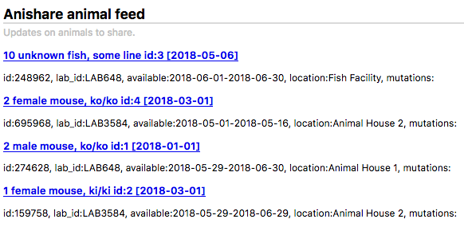
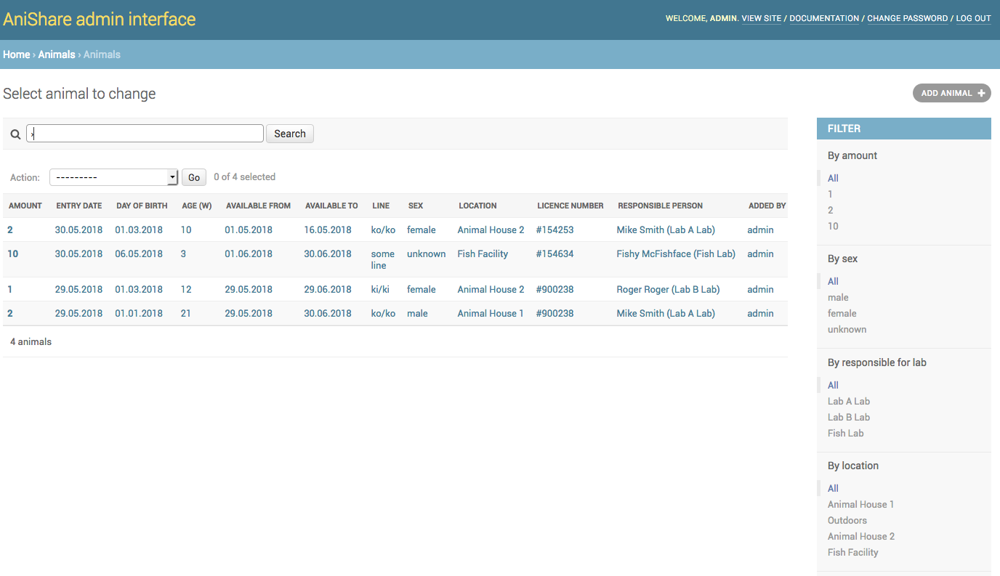

Welcome to the documentation of anishare !¶
Introduction¶
anishare is a webservice for research institutes to share animals with the goal to re-use animals and thus minimize total animal usage.
It has been developed at the Leibniz institute for aging research in Jena. This django app is meant to be used by researchers who want to share research animals with their colleagues. The basic idea is that animals are bred for experiments; however, sometimes, not all parts of the animal are used or sometimes an experiment gets cancelled for whatever reason. By sharing animals within the institute, less animals in total have to be sacrificed for research.
Anishare is a simple database of animals offered for reuse and a easy way to claim an animal with automatic generation of email messages as well as an RSS feed for updates.

At the moment, the software/database is geared towards handling of mice and fish, however, it can be adjusted to handle any kind of research animal. AniShare is connected to import animals from PyRat or Tick@lab. Until now there is only a special limited synchronisation back to PyRat. The official changes (e.g. new ownership must be applied in PyRat or Tick@lab separately by the responsible person, in communication with the animal care takers).
This documentation can also be downloaded as pdf file: Anishare Documentation
Contact¶
Technical and application support: Fabian Monheim (CF Life Science Computing), fabian.monheim@leibniz-fli.de, 03641-65-6872
Content support: Animal Facility and Animal Welfare Officer
License¶
The software was developed at the Leibniz Institute on Aging - Fritz Lipmann Institute (FLI; http://www.leibniz-fli.de/) under a mixed licensing model. Researchers at academic and non-profit organizations can use anishare using the included license, while for-profit organizations are required to purchase a license. By downloading the package you agree with conditions of the FLI Software License Agreement for Academic Non-commercial Research (LICENSE.pdf).
Sitemap¶
Add mice directly from PyRAT: https://anishare.leibniz-fli.de/animals/micefrompyrat
Add pup directly from PyRAT: https://anishare.leibniz-fli.de/animals/pupfrompyrat
Add fish directly from tick@lab: https://anishare.leibniz-fli.de/animals/fishfromtickatlab
Animal and organ feed: https://anishare.leibniz-fli.de/animals/feed
Administration: https://anishare.leibniz-fli.de/admin
Change history: https://anishare.leibniz-fli.de/changehistory
Change history feed: https://anishare.leibniz-fli.de/changehistory/feed
User types¶
User: every FLI employee who wants to claim an animal.
Manager: this person is appointed within the research group and coordinates the offering/sharing of animals.
Person who perform euthanasia: this person will be named in anishare by the manager (relevant only for organ sharing).
Superuser: this person is administrator of the database and has the full control of the function (IT, animal welfare officers, veterinarians and heads of animal facilities).
Main user interface¶
Animals¶
The main user-facing site is the list of animals to be shared. A user can browse this list, sort it via the headers or search for a term using the search bar.
If a user is interested in an animal, they should click on the button “Claim” which will bring up another page (see below) in which they can review their claim before finally submitting. When they click on “Yes, I want to claim this!”, then they will be entered as new owner of this animal and an email will be send to them as well as the responsible/contact person informing them about this transaction. To claim more than one animal it is possible to select the desired animals at the first coloumn. Please use after selection the button Claim all selected animals. Again a new page opens to review the selection. After submitting the responsible person(s) of the animals only get one email with their claimed animals. To claim an animal from a fish group (coloumn # > 1) it is nessecary to claim it individualy with the claim function of the entry (last coloumn).
Note
If more than one animal is available (coloumn # > 1), the user can adjust the number they want to claim. The remaining animals will still be available for claim. Because of uniqueness it’s only possible to offer exactly one mouse per dataset. In contrast fishes can be offer in a group.
Organs¶
There exists an individual page for animal organ share. It is very similar to the animal page,
however only individual organs are for offer. The entry at the column Organ (used) indicates
all organs which can not be claimed. Also there is no availability period, but a day at
which the animal gets sacrificed. The person responsible for sacrifice the animal will be informed via
email if anybody claims some of the available organs. The entry will remain available to others (as
they might want to claim other organs).
Organ index view:

Organ claim view:

RSS Feed¶
An RSS feed containing the latest ten animals and organs is automatically generated and can be found at /animals/feed. Users can subscribe (Most email clients allow the subscription to RSS feeds) to this feed to stay up-to-date with the animal catalogue. By clicking on a link in the feed, they are directed to the claim page of the individual animal/organ.
Main animal manager tasks¶
An animal manager can add animals and organs to the database on two ways. First, it is possible to add entrys manually. Secondly, it is possible to import an Excel sheet. At the FLI Jena there are two databases to manage animals. Now the databases are not connected. To transfer more than one or two datasets to anishare it’s recommend to use the export function of PyRAT or tick@lab and the import function of anishare. To use the export/import process please read the topic Animals import or Organs import.

Add Animals manually¶
Click on Animals -> Add to add an animal.

All fields in bold need to be filled in, the others are optional.
After adding several animals, the main (index) view should look like this:
Animals import¶
There are several ways to import informations of animals. Using PyRAT you can create a work request or you can use AniShare to import the details wich is also possible using tick@lab. Both ways will be explained below.
From PyRAT¶
In most cases it is the easiest way to create a work request inside PyRAT. Select the work request class Add to AniShare and add the animals you like to import. Because it’s possible to create an sacrifice request based on an Add to AniShare request it is nessecary to select the sacrifice method if the mice will not find a new responsible person (claiming). You can use the Comments field, if you like to add additional information for all mice belonging to the work request. The comment is displayed in AniShare in the comment field of the mice. Every hour AniShare searchs after those requests with status open. If the import succeded the status of the work request change to Added to AniShare. Mice are offered two weeks and pups one week. The import will fail if a mouse has no license or a mouse has been already offered. If a mouse can not be imported the creator of the work request gets a email about it and a comment about will be visible inside the work request. The status of the work request will change to Deferred, if no animal could be imported.

The status of the Add to AniShare will change to close after the offer time has been expired. Additionally the creator of the Add to AniShare work request gets a message with all mice that are not claimed excepting wild type animals. The message contains a link to create a sacrifice request including the animals listed in the message. The link is 14 days valid. After this time it is still possible to create the work request manually. Only the recipient of the message can open the link to create the sacrifice request.

After opening the link the user gets a confirmation or error message. The confirmation message includes the work request id from PyRAT.

The due date inside the created sacrifice request will be set to three days in the future. The fields Responsible staff, Pertains to, Initiator, Sacrifice reason and Sacrifice method will be copied from the previous Add to AniShare work request.
Another way to import animals from PyRAT is to use the website Add Mice or for pups
Add Pup. The user has the same rights as in PyRAT. It means the user has access to all animals
as in PyRAT and the user must have a PyRAT account. If the user in PyRAT has the role Animal facility staff or Administrator the user will only
see the data after searching (filter) an owner or a responsible person of the animals.

To import the animals please select / activate the animals (rows) and push the button Import mouse/mice to AniShare. You find the button on the left
side below the table. Now it’s possible to change the default offering period (mouse = 14 days, pup = 7 days) and to add a second responsible person.
The second responsible person gets a mail too if the animals was claimed. After checking the informations the import runs after pushing the button
Yes, I want to offer these mice!. After import you switch automatically to the administration area of AniShare und you can see the imported animals
if the import successful. If an import failed you see an error message and the AniShare admin gets a mail about it. One last hint: It’s only possible to
import an animal once only.
From tick@lab¶
In most cases it is the easiest way to use the website Add Fish. The user has the same rights as in PyRAT. It means the user has access to all animals as in tick@lab and the user must have a tick@lab account.

To import the animals please select / activate the animals (rows) and push the button Import Fishs to AniShare. You find the button on the left
side below the table. Now it’s possible to change the default offering period (14 days) and to add a second responsible person.
The second responsible person gets a mail too if the animals was claimed. After checking the informations the import runs after pushing the button
Yes, I want to offer these fishes!. After import you switch automatically to the administration area of AniShare und you can see the imported animals
if the import successful. If an import failed you see an error message and the AniShare admin gets a mail about it. One last hint: It’s only possible to
import an animal once only.
Add Organs manually¶
Click on Organs -> Add to add an organ.
All fields in bold need to be filled in, the others are optional.
Organs import¶
From PyRAT¶
First login to PyRAT and switch to the english version of PyRAT if it is no preset. Then select the animals which
should be import to anishare. Click on QS (Quick Select) and activate the option Export this list to Excel.
Push the button Apply.
Now it’s important to select all mandatory fields: ID, Lab ID, Sex, Line / Strine (Name), Mutations, Date of birth, Responsible, License number, Building, Sacrifice date, Sacrifice method

It’s possible to save the selected columns as a Manage View for reuse (fold out Manage View on the left side of the File name)
After downloading the file it’s nessecary to edit the file because the coloumns Animal type, Euthanasia performed by, Comment are missing.
Furthermore the format of the coloumn Sacrifice date needs to be adapt.
To simplify this process there are macros for LibreOffice and MS Office. The macros automatically add the missing coloumns and add the value
mouse at coloumn Animal type
Please refeer to the macro site to downloading the macros and further informations.
After running the macro it’s possible to fill out the coloumn Sacrifice method with one of the following entries: CO2, cervicale dislocation, decapitation, blood withdrawl, finale heart punction, overdose anaesthetics, other and the coloumn Organ used with the following entries: bladder, bone marrow, brain, genitals, heart, intestine, kidney, liver, lungs, other, spleen, stomatch It’s also possible to add this entries after uploading the file.
Note
It’s possible to add more than one entry at the field Organ used. Please use a comma as seperator like brain, bladder.
Please save the Excel file as .xlsx file. Now go to the anishare admin interface to Home › Animals › Animals
and click the button IMPORT (above the filter). Select the file and choose the file format. Upload the file. After submitting all datasets will show to
the user if all requirements match.
From tick@lab¶
Because we expect only a small quantity of importing organs from tick@lab it’s only possible to add entries manually.
Duplicating entries¶
For input of multiple similar entries, it is possible to duplicate an animal or organ entry. For this, select one or more entries in the list (see figure below) and select “copy animal” from the dropdown menu and click “Go”.

Another option is to edit an existing animal and click on “Save as new”. This will save the currently edited animal as a new instance:

Main administrator tasks¶
The administrator can edit more objects in the admin interface, namely not just animals and organs but also labs, locations and persons:

Organs used¶
These organs are standard values for the field Organ used.
Animals¶
The main category to administer are animals to share. Here, several filters (such as “sex”, “location”, etc.) are available to search for any set of animals.

Note
in order to remove a claim (thus making the animal available again), either click on an animal and remove the email address from the field “new owner”, or select one or multiple animals and select the “clear claim” Action and click “Go”.
Note
Once created, an animal cannot be deleted, except by the administrator.
Labs¶
Labs are research labs/research groups and need to have at least one responsible/contact person each

Note
Only administrators are allowed to see and change Labs
Locations¶
Locations are where animals are stored. Usually something like room numbers or “animal house” or “fish facility”.

Note
Only administrators are allowed to see and change Locations
Persons¶
Persons responsible for the animals. Could be a vet or similar. Every animal needs to have a responsible person associated to them. This person then gets an email when the animal is being claimed.

Note
Only administrators are allowed to see and change Persons
Make a user an animal manager¶
The administrator is also responsible for user/rights management. In order to be able to add/edit animals, a user has to be in the group animal manager and have staff status in the django admin interface. For this, an administrator has to go to the user management in the admin interface by clicking “Home” -> “Authentication and Authorization” -> “Users”. Here, they can make a user an animal manager, by setting these values (staff and group animal manager):


{kind=link}
{kind=link}
{kind=link}
{kind=link}